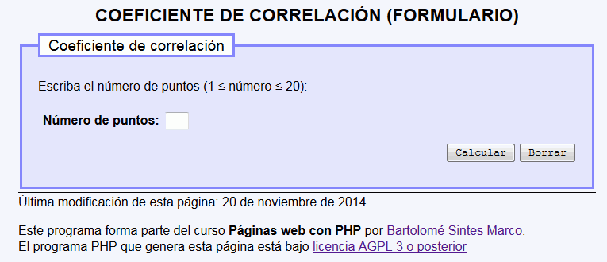
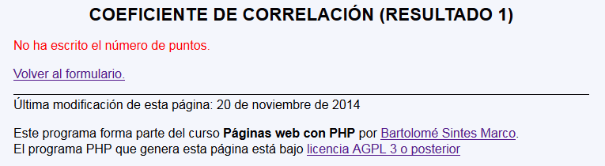
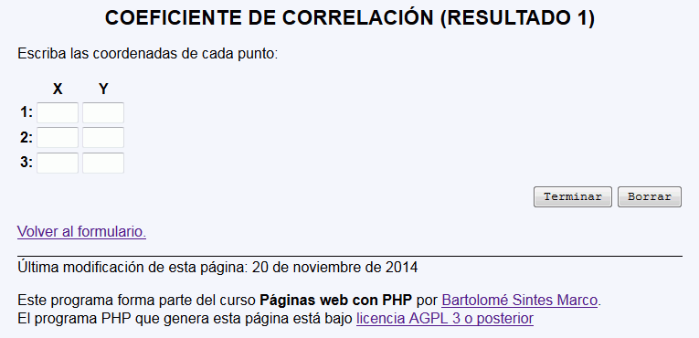
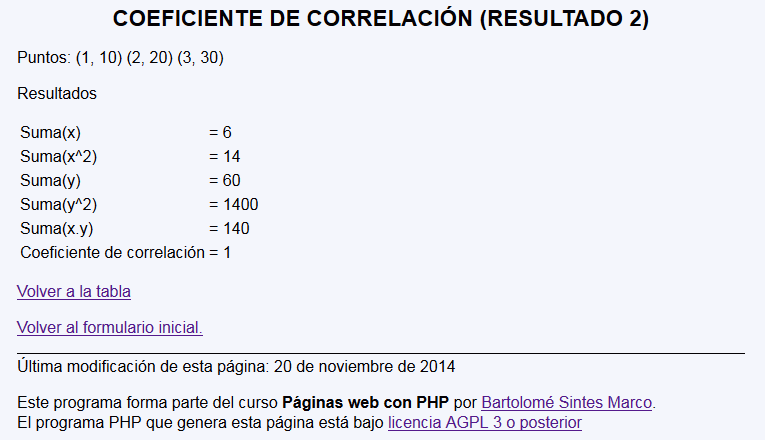
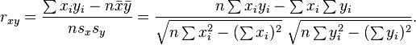

Coeficiente de corrrelación - Ejemplo de programa
Nota: El día del examen los alumnos no tienen acceso a este ejemplo, solamente tienen acceso a las capturas del apartado anterior.
Un ejemplo de programa puede probarse en la ventana siguiente:
En este ejercicio se debe crear un programa que calcule el coeficiente de correlación de una nube de puntos.



Nota: No es necesario comprobar las matrices recibida (salvo si sobra tiempo ;-)


<h1>Coeficiente de correlación (Resultado 1)</h1>
<p>Escriba las coordenadas de cada punto:</p>
<form action="coeficiente_correlacion_3.php" method="get">
<table>
<tbody>
<tr>
<th></th>
<th>X</th>
<th>Y</th>
</tr>
<tr>
<th>1:</th>
<th><input type="text" name="x[1]" size="5" /></th>
<th><input type="text" name="y[1]" size="5" /></th>
</tr>
<tr>
<th>2:</th>
<th><input type="text" name="x[2]" size="5" /></th>
<th><input type="text" name="y[2]" size="5" /></th>
</tr>
<tr>
<th>3:</th>
<th><input type="text" name="x[3]" size="5" /></th>
<th><input type="text" name="y[3]" size="5" /></th>
</tr>
</tbody>
</table>
<p class="der"><input type="submit" value="Terminar" />
<input type="reset" value="Borrar" />
<input type="hidden" name="puntos" value="3" /></p>
</form>
<h1>Coeficiente de correlación (Resultado 2)</h1>
<p>Puntos: (1, 10) (2, 20) (3, 30) </p>
<p>Resultados</p>
<table>
<tbody>
<tr>
<td>Suma(x)</td>
<td>= 6</td>
</tr>
<tr>
<td>Suma(x^2)</td>
<td>= 14</td>
</tr>
<tr>
<td>Suma(y)</td>
<td>= 60</td>
</tr>
<tr>
<td>Suma(y^2)</td>
<td>= 1400</td>
</tr>
<tr>
<td>Suma(x.y)</td>
<td>= 140</td>
</tr>
<tr>
<td>Coeficiente de correlación</td>
<td>= 1</td>
</tr>
</tbody>
</table>
Nota: El día del examen los alumnos no tienen acceso a este ejemplo, solamente tienen acceso a las capturas del apartado anterior.
Un ejemplo de programa puede probarse en la ventana siguiente: